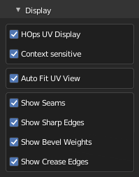

Preferences System
Preferences subpanel
Panel

 Zen UV Keymaps - Set Shortcuts for Zen UV Menus.
Zen UV Keymaps - Set Shortcuts for Zen UV Menus.- Reset Preferences - Reset Zen UV preferences to the Default state.
Display subpanel

- HOps UV Display - Display UV in 3D View using Hard Ops addon.
- Context-sensitive - Enable HOps UV Display if UV Editor is open.
- Auto Fit UV View - Automatically Fit and Zoom UV viewport.
- Show Seams - Display UV Seams.
- Show Sharp Edges - Display Sharp edges. It can be overlapped by Seams/Bevel Weights/Crease Edges display.
- Show Bevel Weights - Display Sharp edges. It can be overlapped by Seams/Bevel Weights/Crease Edges display.
- Show Crease Edges - Display crease edges created for the Subdivision modifier. It can be overlapped by Seams/Bevel Weights display.
Panels subpanel

Allow disabling displaying unused categories.